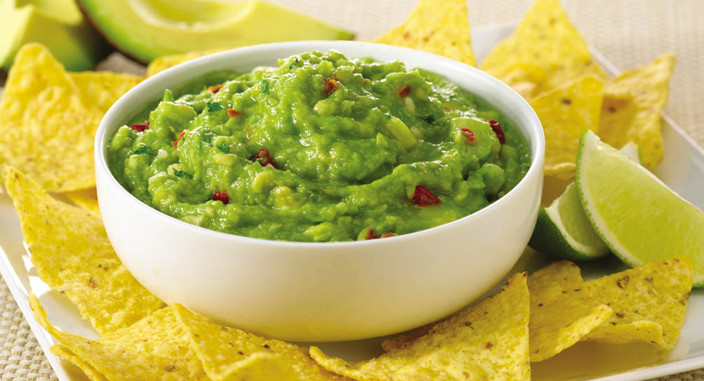

Guacemole

Ingredienten
- 3 avocado's, geschild, pit verwijderd en gepureerd
- 1 limoen, uitgeperst
- 1 theelepel zout
- 80 gr kleingesneden ui
- 3 eetlepels verse koriander, fijngesneden
- 2 roma tomaten, in kleine blokjes
- 1 theelepel fijngesneden knoflook
- 1 snufje cayennepeper
Bereidingswijze
Pureer of stamp in een middelgrote kom de avocado's, limoensap en zout. Meng de ui, koriander, tomaat en knoflook erdoor. Roer de cayennepeper er als laatste door. Serveer direct of laat 1 uur in de koelkast staan zodat de smaken nog meer door elkaar trekken.